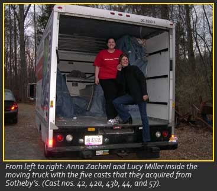
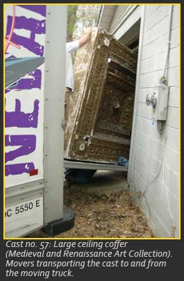
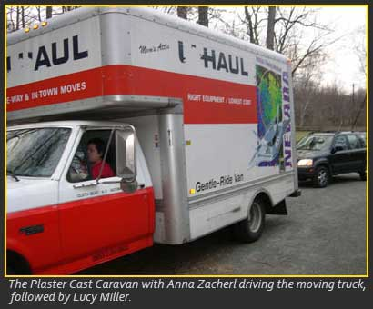

Part III:Picking up the Pieces

Two weeks later, the two unstoppables were back. We had planned to use our GMU friend to move the art, but we were nervous about each day that the vulnerable casts remained in the warehouse, with all the foot traffic and equipment. Our video footage and sale catalogue were constant reminders that nobody is responsible for anything, starting from the date of the sale. We picked up a truck from a well-known rental company, whose name will be omitted, and drove straight to the warehouse. We arrived before our two hired and scheduled movers in order to pack our most treasured piece (no. 57). It took two large boxes of bubble wrap and tissue paper stuffed between the delicate reliefs. Next the duct tape. Our movers showed up, and this situation mimicked every other move: there were a thousand unforeseen glitches.During that finagling, a kind young man donated a piece of his lot which he had expected to carry away with no help from anyone, but couldn't. He confessed that he had been one of the telephone bidders, but with a relatively low budget, just hoping to end up with something that could be a conversation piece in his apartment. When we informed him that using a household cleaner on the casts would destroy them, he asked for some cleaning advice and wondered how we knew so much about this subject. He appeared intrigued with the project and, as a result, GMU received a donation of another fabulous cast (no. 44)! Thank you, Michael!

As for loading, it was cumbersome, difficult, trying. Our two movers, three male volunteers, and Anna helped load the thousand-pound gorilla. I had the luxury of documenting the event. The least expensive bid had brought us the heaviest cast of all. Once all five pieces were successfully loaded we backed our "insurance:" about forty movers' blankets, large sections of synthetic padding, duct tape, and rope, lots of rope tying it all together. By late afternoon, we were ready to return to our lodgings in Long Island. The truck's right rear brake light flickered. At dusk, when the headlights were turned on, that taillight did not come on. We decided that daytime driving should not be a problem: the driver of the car in which we had driven up could be the guard dog, following the truck with her hazards on, and we could communicate by cell phone in case of emergencies.Next we found that our thousand-pound gorilla (no. 57), the piece hammered at $50, was a few inches taller than the truck we had rented. We raced down the street to exchange trucks, paying the movers to wait for us. As we hopped in the new truck, which was already running, the agent gave us an "Oh, by the way…," telling us that the only thing wrong with the truck was that the driver's inside door handle was missing. The driver would have to roll down the window to open her door. No problem. We shot back to the moving scene, this time parking the truck on the other side of the building at a different loading dock, this one level with the floor. As the activity increased, we put our personal belongings in the cab for safety. When the truck had to be moved an inch or so, we were unable to get in without many hands trying the locks. (Remember never to lock the cab, keep valuables in backpack.) Then we started the truck for the first time, which could be accomplished only when we pulled the entire loose dashboard forward and reached behind it to pull out the starter.(Comic relief. Again, no problem.)
Starting out the next morning at 10:30, we found ourselves backed up for an hour by an accident on the Long Island Expressway, moving only an inch or two at a time. All of a sudden, the guard dog phoned the truck-driver, and asked her to hit the brakes. They had stopped working. We took the next exit. Driving in tandem in New York is difficult under ordinary circumstances, and we found ourselves separated by angry finger-gesturing drivers. By the way, did we mention that the truck's side mirrors only worked when held in place manually? A service station appeared in a few miles, and after another two hours, the problem was fixed.
By early afternoon, we were back on the highway, still on Long Island, moving at a steady crawl. A few hours went by before the guard dog realized that the turn signals, brake lights, and headlights were not working on the truck. The next exit happened to be to the Bronx, only minutes from the truck rental agency! The traffic jam there was as entertaining as it was frustrating: there was no place for any car to go (including ambulances and fire trucks), and everybody had their horns blowing. It was truly a classic New York scenario. Somehow we managed to pull off Webster Avenue into a convenience store parking lot. Both of us ranted and raved on our phones, going through the litany again, to the trucking company and to the last service station, pointing out their obvious negligence and our safety concerns. In addition, we reiterated, as we had done with everyone up to that point, that nothing could be moved from the truck.rom the truck. A third truck was not an option. The company sent a mechanic, but he had to wade through the sludge of traffic.

Meanwhile, two New York firefighters sauntered up to us. After listening to our drama, and receiving a brief education on the Met's plaster casts, they cautioned us that, uh, it's almost sundown, and, uh, two women do not want to be in this section of the Bronx at sundown. Very sweet, but we knew that. About that time, our true savior arrived, the mechanic. The previous mechanics had claimed to have fixed the truck, but actually they had only jerry-rigged the wires. This man showed us. He, like everyone else, agreed that the truck should never have left the lot.
Back on the highway, the setting sun in our eyes, we were soon heading out of the city over the George Washington Bridge. One of us whimpered to the other that she had reached her limit for the day, so we pulled off at the first exit - Ridgefield, New Jersey. Before we could sleep, we got a chain and a lock for the back of the truck. But who, we realized later, would steal thousands of pounds of plaster casts, let alone take the time to rip through all our assorted packing materials?